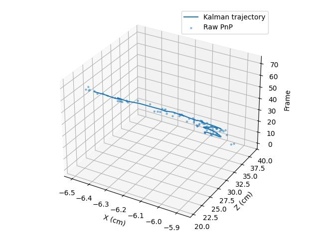

Video görüntülerinde obje takibi için filtreleme kullanmak mümkün, bu teknik ile iki boyutlu yansımadan üç boyutlu konum bilgisini takip edebiliriz. Kalman Filtreleri (KF) ile görüntüde ilgilendiğimiz objeyi her seferinde iki boyutta “bulmalıyız’’, yani bu objenin örüntüsünün ne olduğunu önceden biliyor olmamız gerekir, ve onu sonraki resimlerde takip etmemiz gerekir. Bulduğumuz, iki boyutlu kordinat değerleridir, yani ölçümsel büyüklüklerdir, ardından KF’in en son konumuna göre ürettiği tahmin ile aradaki fark KF’i düzeltmek için kullanılır.
Kalman Fitreleri
Bu notlarda, düz bir yüzey üzerinde hareket eden, üzerinde 4×4 karelik bir satranç tahtası deseni bulunan bir kartonun, video görüntülerinden üç boyutlu hareketinin nasıl takip edilebileceğini sistematik ve formel bir çerçevede açıklar. Amaç, daha önce kullanılan projeksiyon-matrisi ağırlıklı ve kararsız yaklaşımın yerine, geometrik olarak doğru ve istatistiksel olarak tutarlı bir yöntem koymaktır.
Ele alınan yöntem iki ana bileşenden oluşur:
Görsel poz kestirimi (pose estimation) — her karede nesnenin 3B konumu
Durum uzayı modeli + Kalman Filtresi — bu konumların zaman içinde düzgünleştirilmesi
Problem Tanımı ve Varsayımlar
Fiziksel senaryo
Temel varsayımlar
Bu varsayımlar, problemi hem iyi tanımlı hem de çözülebilir hale getirir.
Geometri ve Dinamiğin Ayrılması
Bu yaklaşımda kritik tasarım kararı şudur: Görüntü geometrisi ile zaman dinamiğini birbirinden ayırmak
Bu ayrım sayesinde:
Bu mimari, hem matematiksel olarak tutarlı hem de pratikte kararlı bir çözüm sunar.
Satranç Tahtası ve İç Köşeler (Önemli Detay)
4×4 karelik bir satranç tahtası:
OpenCV’nin findChessboardCorners fonksiyonu kareleri
değil, iç köşeleri bekler.
Bu yüzden kullanılan boyut:
board_size = (3, 3)Bu detay gözden kaçarsa: - Hiç köşe bulunmaz - Takip tamamen sessizce başarısız olur
Poz Kestirimi (Pose Estimation) – solvePnP
Temel ilke
Elimizde şunlar var:
KBu bilgilerle aşağıdaki geometrik problem çözülür:
“Bilinen 3B noktaların, görüntü düzlemindeki 2B izdüşümlerinden, nesnenin kamera koordinat sistemindeki konum ve yöneliminin kestirilmesi”
Sayısal çözüm (OpenCV)
ok, rvec, tvec = cv2.solvePnP(object_points,
image_points,
K,
distCoeffs)Çözüm sonucunda elde edilen büyüklükler:
rvec: Nesnenin yönelimini temsil eden dönme vektörü
(Rodrigues gösterimi)tvec: Nesnenin kamera koordinat sistemindeki öteleme
vektörütvec = [X, Y, Z] doğrudan metrik 3B konumdur.
Bu aşamadan sonra:
gerek yoktur.
Neden X–Z Düzlemi Takip Edildi?
Fiziksel senaryoda:
Bu yüzden Kalman filtresinin durumu şöyle tanımlandı:
x_t = [X, Z, dX, dZ]Bu, problemi:
hale getirir.
Kalman Filtresi Modeli
Durum geçiş modeli (sabit hız)
\[ X_{t+1} = X_t + dX_t · \Delta t \]
\[ Z_{t+1} = Z_t + dZ_t · \Delta t \]
Matris formunda:
F = [[1, 0, dt, 0],
[0, 1, 0, dt],
[0, 0, 1, 0],
[0, 0, 0, 1]]Ölçüm modeli
Ölçüm, doğrudan PnP’den gelen konumdur:
z_t = [X, Z]Bu nedenle ölçüm matrisi basittir:
H = [[1, 0, 0, 0],
[0, 1, 0, 0]]Model tamamen doğrusal olduğu için klasik Kalman filtresi yeterlidir.
import cv2
import numpy as np
class KalmanXZ:
def __init__(self, dt):
self.dt = dt
# State: [X, Z, dX, dZ]
self.x = np.zeros((4, 1))
self.P = np.eye(4) * 10.0
self.F = np.array([
[1, 0, dt, 0],
[0, 1, 0, dt],
[0, 0, 1, 0],
[0, 0, 0, 1]
])
self.H = np.array([
[1, 0, 0, 0],
[0, 1, 0, 0]
])
self.Q = np.eye(4) * 0.05
self.R = np.eye(2) * 2.0
self.I = np.eye(4)
def predict(self):
self.x = self.F @ self.x
self.P = self.F @ self.P @ self.F.T + self.Q
def update(self, z):
z = z.reshape(2, 1)
y = z - self.H @ self.x
S = self.H @ self.P @ self.H.T + self.R
K = self.P @ self.H.T @ np.linalg.inv(S)
self.x = self.x + K @ y
self.P = (self.I - K @ self.H) @ self.P
def run_kf();
cap = cv2.VideoCapture("/opt/Downloads/skdata/chessb-left.avi")
fps = cap.get(cv2.CAP_PROP_FPS)
dt = 1.0 / fps
# ---- Camera intrinsics ----
K = np.array([
[700., 0., 300.],
[ 0., 700., 330.],
[ 0., 0., 1.]
])
dist = np.zeros((5, 1))
board_size = (3, 3)
square_size = 1.0
objp = np.zeros((board_size[0] * board_size[1], 3), np.float32)
objp[:, :2] = np.mgrid[0:3, 0:3].T.reshape(-1, 2)
objp *= square_size
axis = np.float32([
[0, 0, 0],
[2, 0, 0],
[0, 2, 0],
[0, 0, -2]
])
kf = KalmanXZ(dt)
initialized = False
raw_trace = []
kf_trace = []
frame_idx = 0
while True:
ret, frame = cap.read()
if not ret:
break
gray = cv2.cvtColor(frame, cv2.COLOR_BGR2GRAY)
found, corners = cv2.findChessboardCorners(gray, board_size)
cv2.putText(frame,
f"Frame {frame_idx} | found={found}",
(20, 30),
cv2.FONT_HERSHEY_SIMPLEX,
0.8,
(0, 255, 0) if found else (0, 0, 255),
2)
if found:
corners = cv2.cornerSubPix(
gray, corners, (5, 5), (-1, -1),
(cv2.TERM_CRITERIA_EPS +
cv2.TERM_CRITERIA_MAX_ITER, 30, 0.01)
)
ok, rvec, tvec = cv2.solvePnP(objp, corners, K, dist)
if ok:
X, Z = float(tvec[0]), float(tvec[2])
raw_trace.append((X, Z))
if not initialized:
kf.x[0, 0] = X
kf.x[1, 0] = Z
initialized = True
kf.predict()
kf.update(np.array([X, Z]))
kf_trace.append((kf.x[0, 0], kf.x[1, 0]))
cv2.drawChessboardCorners(frame, board_size, corners, found)
imgpts, _ = cv2.projectPoints(axis, rvec, tvec, K, dist)
imgpts = imgpts.astype(int)
o = tuple(imgpts[0].ravel())
cv2.line(frame, o, tuple(imgpts[1].ravel()), (0, 0, 255), 3)
cv2.line(frame, o, tuple(imgpts[2].ravel()), (0, 255, 0), 3)
cv2.line(frame, o, tuple(imgpts[3].ravel()), (255, 0, 0), 3)
cv2.imshow("Chessboard KF Tracking", frame)
if cv2.waitKey(20) & 0xFF == 27:
break
frame_idx += 1
cap.release()
cv2.destroyAllWindows()
with open("trajectory.csv", "w") as f:
f.write("frame,raw_X,raw_Z,kf_X,kf_Z\n")
for i, ((rx, rz), (kx, kz)) in enumerate(zip(raw_trace, kf_trace)):
f.write(f"{i},{rx},{rz},{kx},{kz}\n")
print(f"\nSaved trajectory.csv with {len(kf_trace)} samples")
run_kf()Notasyon ve Semboller
| Sembol | Açıklama |
|---|---|
| (X, Y, Z) | Nesnenin kamera koordinat sistemindeki 3B konumu (metrik birimler) |
| (X, Z) | Bu çalışmada takip edilen yatay (X) ve derinlik (Z) bileşenleri |
| (dX, dZ) | İlgili eksenlerde hız bileşenleri |
| (x_t) | Kalman filtresinin (t) anındaki durum vektörü ([X, Z, dX, dZ]^T) |
| (z_t) | Ölçüm vektörü (PnP’den elde edilen ([X, Z]^T)) |
| (rvec) | Nesnenin yönelimini temsil eden Rodrigues dönme vektörü |
| (tvec) | Nesnenin kamera koordinat sistemindeki öteleme vektörü ([X, Y, Z]^T) |
| (K) | Kamera iç parametrelerini içeren kamera matrisi |
| (F) | Durum geçiş matrisi (sabit hız modeli) |
| (H) | Ölçüm matrisi |
| (Q) | Süreç gürültüsü kovaryans matrisi |
| (R) | Ölçüm gürültüsü kovaryans matrisi |
import pandas as pd
df = pd.read_csv("trajectory.csv")
print(df.head())
import matplotlib.pyplot as plt
from mpl_toolkits.mplot3d import Axes3D # noqa
fig = plt.figure()
ax = fig.add_subplot(111, projection='3d')
ax.plot(df["kf_X"], df["kf_Z"], df["frame"],
label="Kalman trajectory")
ax.scatter(df["raw_X"], df["raw_Z"], df["frame"],
s=5, alpha=0.4, label="Raw PnP")
ax.set_xlabel("X (cm)")
ax.set_ylabel("Z (cm)")
ax.set_zlabel("Frame")
ax.legend()
plt.tight_layout()
plt.savefig('vision_60track_02.jpg')
Başlangıç Salınımı (Zig-Zag) Neden Normal?
Elde edilen sonuçlarda başta küçük bir zig-zag görülmesi doğaldır:
Bu, Kalman filtrelerinde beklenen ve sağlıklı bir davranıştır.
İstenirse: - İlk iki ölçümden hız tahmin edilerek - ya da RTS smoother uygulanarak
tamamen giderilebilir.
Bu yaklaşım ile:
Özet olarak, kullanılan modelleme yaklaşımı hem geometrik hem de istatistiksel açıdan tutarlıdır ve uygulamada güvenilir sonuçlar üretir.
Bu mimari, daha ileri çalışmalar (RTS smoothing, ivmeli hareket modelleri, faktör grafik tabanlı yaklaşımlar) için sağlam bir temel sunmaktadır.
Parcaçık Filtreleri (Partıcle Filters)
Parçacık filtreleri (PF) bir dağılımı ayrıksal olarak temsil edebilirler. Diyelim ki tek boyutlu bir dağılımı 100 öğe içeren bir dizin ile temsil edebiliriz, o zaman dağılımın değerlerini 100 tane noktada taşımamız gerekir. Bunun faydaları her türlü dağılım şeklini temsil edebilmemiz. Gaussian ile sadece tek bir tepe noktası olabilir, fakat ayrıksal temsil ile 2, 3, istediğimiz kadar tepe noktası olan bir dağılımı temsil edebiliriz. Bu sayede birden fazla gayrı lineer hipotezi aynı anda işletebiliriz. KF ile tepe noktası en iyi tahminimizdir (mesela.. satranç kartonu masa ortasında), PF ile birkaç tahmini aynı anda hesaplatmak mümkün olabilir.
PF kodlaması \(x_t\) için iki tane veri yapısı gerektirir. Biri dağılım değerlerini temsil eden parçacıklardır, diğeri dağılımdaki önemini temsil eden ağırlıklardır. Filtreleme mekaniği KF’e benzer, önce bir geçiş uygulanır, ki bu geçiş kararsızlığı arttıracaktır, ardından gözlem verisi ve bir hata fonksiyonu üzerinden dağılım güncellenir. Bu işlem sırasında hatası yüksek olan parçacıklar cezalandırılır, onların ağırlığı azalır, ötekilerinki yükselir. Her parçacık için hata fonksiyonu şudur:
\[ w^{[i]} = \frac{1}{1 + (y^{[i]} - p^{[i]})^2 )} \]
\(y^{[i]}\) gözlem değeri, \(p^{[i]}\) geçiş uygulandıktan sonra elimizdeki tahminimizdir, ki bu KF dünyasındaki \(\Phi x_t + Q\)’nun karşılığıdır. PF için hareket geçişi şöyle hesaplanır: Bir birörnek (uniform) dağılımdan örnekleme yapılır, ve bu örneklenen değerler \(x\)’e eklenir. Örnekleme için z-kordinatı için \(Unif (-0.1, -1)\)’i, x kordinatı için \(Unif (-40, 40)\)’i kullandık. Yani ileri doğru 0.1 ve 1 santimetre arasında bir hareket ekliyoruz, ve sağa ve sola dönük olarak 80 santimetrelik bir kararsızlığı hesaplara ekliyoruz.
Üstteki formülde \((y^{[i]} - p^{[i]})^2\) e niye 1 değeri eklediğimiz açıktır herhalde, bu sayede hata fonksiyonunun olasılık değerlerini andıran bir sonuç döndürmesini istiyoruz. Çok ufak hatalar için \(1 + hata\) bölünendeki 1’i bölecek, ve 1’e yakın bir değer geri getirecek. İstediğimiz de bu zaten, küçük hataların daha büyük ağırlığa, büyük hataların ise tam tersine sebep olmaları.
Tekrar örnekleme (resampling) sürecinde parçacıklar tekrar düzenlenerek ağırlığı çok olan parçacıkların ağırlığı az olanlara göre daha fazla tekrarlanmasını istiyoruz. Dikkat: tekrar örnekleme süreci yeni parçacık değerleri yaratmıyor, sadece mevcut olanları tekrarlıyor ya da onları atlıyor.
import sys; sys.path.append('../../tser/tser_085_pf')
import cv2
import util
from PF import *
dim = 3
if __name__ == "__main__":
fin = "/opt/Downloads/skdata/chessb-right.avi"
cap = cv2.VideoCapture(fin)
N = int(cap.get(cv2.CAP_PROP_FRAME_COUNT))
pf = PF(util.K, 200)
for i in range(N):
ret, frame = cap.read()
h,w = frame.shape[:2]
gray = cv2.cvtColor(frame, cv2.COLOR_BGR2GRAY)
status, corners = cv2.findChessboardCorners( gray, (dim,dim))
is_x = []; is_y = []
if status:
cv2.drawChessboardCorners( gray, (dim,dim), corners, status)
for p in corners:
is_x.append(p[0][0])
is_y.append(p[0][1])
if len(is_x) > 0:
pf.update(array([is_x[5], h-is_y[5], 1.]))
mu_x = pf.average()
util.proj_board(gray, mu_x[0], mu_x[1], mu_x[2])
cv2.imshow('frame',gray)
if cv2.waitKey(20) & 0xFF == ord('q'):
break
Kaynaklar
[1] Bayramlı, Sample Video
[2] Bayramlı, Sample Video